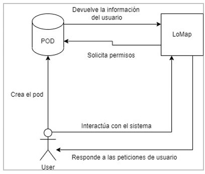

1. Introduction and Goals
Este documento explica el proyecto realizado durante la asignatura de Arquitectura de Software. En ella se nos ha contratado para realizar un sistema web denominado Lo Map basado en la arquitectura SOLID.
Este proyecto esta desarrollado por un equipo de 5 personas.
1.1. Requirements Overview
El objetivo principal de este sistema es ofrecer un mapa donde los usuarios puedan guardar y situar distintos puntos de interes que ellos valoren. Los requisitos que se piden realizar en este proyecto son:
-
Guardar la información en pods individuales
-
Mostrar en un mapa los diferentes lugares que los usuarios quieran guardar
-
Selección entre diferentes categorias para los lugares (tiendas, bares, restaurantes…)
-
Los usuarios pueden acceder a información compartida por otros usuarios
-
Se permite realizar filtros a las busquedas del mapa
-
Se puede asociar puntuación comentarios
1.2. Quality Goals
| Objetivo | Descripción |
|---|---|
Usabilidad |
Tener un sistema que cualquier usuario pueda utilizar fácilmente |
Descentralizado |
Evitar tener la información en una base de datos central para evitar problemas de seguridad con la información |
Privacidad |
Cada usuario pueda controlar su información y quien tiene acceso a ella |
Diseño limpio |
Código lo más limpio posible para facilitar su expansión y modificación |
Interoperabilidad |
Los datos creados van a poder usarse en otras aplicaciones |
1.3. Stakeholders
| Role/Name | Contact | Expectations |
|---|---|---|
Usuarios |
Posibles usuarios |
Una aplicación rápida, funcional y fácil de entender |
Profesores |
Profesores |
Un proyecto evaluable que sigua los criterios requeridos |
Contratador |
Ayuntamiento de Bruselas |
Una aplicación funcional que cumpla los requisitos solicitados en el contrato |
Equipo de desarrollo |
Equipo de desarrollo |
Saber desarrollar una aplicación con los requisitos dados y conocer mejor el funcionamiento de los principios SOLID |
2. Architecture Constraints
2.1. Tabla 1. Restricciones técnicas
| Restricción | Explicación |
|---|---|
PODs de SOLID |
Se hará uso de la tecnología de PODs de SOLID para asegurar la privacidad de los datos de los usuarios que interactuen con la aplicación. |
GitHub |
El proyecto estará en un repositorio de GitHub |
Docker |
Habrá un Dockerfile y un archivo docker-compose.yml en el proyecto |
2.2. Tabla 2. Restricciones organizativas
| Restricción | Explicación |
|---|---|
Tamaño del equipo |
Somos un equipo de 5 estudiantes, 1 está en evaluación diferenciada. |
Horarios |
Los integrantes del equipo tenemos horarios dispares debido a las a las asignaturas y el trabajo. |
Tiempo |
La aplicación debe de ser desarrollada dentro de los márgenes establecidos por los profesores, y las entregas han de estar realizadas en el tiempo establecido. |
Coordinación |
Los integrantes debemos tener un cierto grado de coordinación para realizar todos una cantidad equitativa de trabajo y asegurar que pueda ser terminado a tiempo y sin comprometer lo que el resto realice. |
Testing |
La aplicación ha de ser testeada durante el desarrollo de la misma para asegurar su correcto funcionamiento yq ue se cumplan todos los rquisitos. |
2.3. Tabla 3. Restricciones de convención
| Restricción | Explicación |
|---|---|
Control de versión |
Se ha de llevar un control de versiones del código de la aplicación. |
Documentación |
Se seguirá la estructrura de Arc42 para realizar la documentación, con ayuda de Asciidoctor para desplegarla. |
Idioma |
La documentación de la aplicación será realizada en español. |
SOLID |
Se deben de seguir los principios SOLID en la realización de la aplicación. |
Código limpio |
El código creado ha de ser bien escrito, facil de leer y claro, además de poder ser mantenible y fácil de modificar. |
3. System Scope and Context
En puntos anteriores hemos hablado de nuestra meta con esta aplicación, ahora tenemos que explicar un poco cuál va a ser nuestro entorno de trabajo y la forma en la que estos se comunican para llegar a dicho objetivo.
3.1. Business Context

| Entidad | Inputs | Outputs |
|---|---|---|
Usuario |
El usuario interactúa con la aplicación |
El output es el POD creado por el usuario el cual es recibido por la aplicación |
POD |
El POD almacena la información del usuario y es solicitado por la webApp |
El output es la información del usuario la cuál serán los puntos marcados en el mapa |
LoMap |
Es la webApp, Recibirá los datos procesados |
La información sobre la aplicación y el usuario actual |
3.2. Technical Context
La aplicación seguirá la arquitectura SOLID, estará escrita en TypeScript y empleará la librería React para la creación de Interfaces de usuario, Aquí debajo se especifica de manera más detallada todo lo que hemos usado en la aplicación y para qué lo utilizamos.
| Tecnología | Descripción |
|---|---|
SOLID |
Arquitectura seguida en la aplicación para el manejo de datos |
TypeScript |
Lenguaje utilizado para la creación de la aplicación |
React |
Librería para la creación de interfaces de usuario |
Javascript |
Lenguaje usado puntualmente para resolver distintos problemas que nos surgieron con código .tsx |
MapBox |
Api para los mapas |
PODs |
Para guardar datos |
Node.js y express |
Todo lo relacionado con la ejecución de la aplicación |
SonarCloud |
Para cobertura de código |
Gráficamente sería así

4. Solution Strategy
Hemos tomado varias decisiones para solucionar los distintos problemas respecto al diseño de la aplicación. Estas son:
-
SOLID. Utilizaremos SOLID como método de almacenar la información de los usuarios con una gran privacidad.
-
React y TypeScript. Como lenguaje para el diseño de la aplicación.
-
Github. Como método de control y copia del proyecto.
-
MVC. Utilizaremos un diseño de modelo-vista-controlador para el desarrollo de la aplicación y comunicación entre sus capas.
5. Building Block View
The building block view shows the static decomposition of the system into building blocks (modules, components, subsystems, classes, interfaces, packages, libraries, frameworks, layers, partitions, tiers, functions, macros, operations, datas structures, …) as well as their dependencies (relationships, associations, …)
This view is mandatory for every architecture documentation. In analogy to a house this is the floor plan.
Maintain an overview of your source code by making its structure understandable through abstraction.
This allows you to communicate with your stakeholder on an abstract level without disclosing implementation details.
The building block view is a hierarchical collection of black boxes and white boxes (see figure below) and their descriptions.

Level 1 is the white box description of the overall system together with black box descriptions of all contained building blocks.
Level 2 zooms into some building blocks of level 1. Thus it contains the white box description of selected building blocks of level 1, together with black box descriptions of their internal building blocks.
Level 3 zooms into selected building blocks of level 2, and so on.
5.1. Whitebox Overall System
LoMap se subdivide en 3 sistemas, sistema LoMap4c, base de datos no relacional mongoDb y POD’s. Las flechas del siguiente diagrma representan las dependenicas entre los componentes.

| Name | Responsibility |
|---|---|
Sistema de PODs |
Almacenamiento de infromacion de fomra decentralizada tanto de nuestro pod, como de datos que haya decidido ser publicos de nuestros amigos. |
LoMap4c |
Interfaz gráfica y flujo de datos con los sitemas previamente definidos de almacenamiento. |
5.2. Level 2
En este subnivel detallamos mas especificamente como se decompondria internamente tanto el componente LoMap4c, como el sistema de pods <white box template> === Level 3 Sigueindo con la descomposicion del sistema LoMap, nos centramos en en el componente WebApp, descantando dentro de este el uso del componente MapBox.
6. Runtime View
Estos son algunos casos de uso que se producen dentro de la aplicación y de como se desarrollan dentro de la aplicación.
6.1. Casos de uso Nivel 1
6.1.1. Añadir un punto al mapa
*En este caso de uso observamos como un usuario ya registrado añade un punto nuevo en su mapa.

6.1.2. Iniciar sesión
*En este caso de uso observamos como un usuario introduce su perfil y su contraseña para entrar en la aplicación.

6.1.3. Cargar mapa
*El usuario iniciará sesión y automáticamente se cargará el mapa, para ello tiene que llamar a la clase principal y que este cargue los puntos.

6.1.4. Añadir un amigo
*En este caso de uso podemos observar el flujo seguido para añadir a un amigo nuestro pod de SOLID.

6.1.5. Eliminar un amigo
*En este caso de uso observamos como eliminar un amigo de nuestro pod.

6.2. Casos de uso Nivel 2
6.2.1. Añadir un punto al mapa
*En este caso de uso observamos como un usuario ya registrado añade un punto nuevo en su mapa y como se comunica con el POD privado para actualizar la información.

6.2.2. Iniciar sesión
*En este caso de uso observamos como un usuario introduce su perfil y su contraseña para entrar en la aplicación.

6.2.3. Cargar mapa
*El usuario iniciará sesión y automáticamente se cargará el mapa, para ello tiene que llamar a la clase principal y que este cargue el mapa del usuario con sus puntos.

6.2.4. Añadir un amigo
*En este caso de uso observamos como añadir un amigo a nuestro pod y como se actualiza la información en ambos pods.

6.2.5. Eliminar un amigo
*En este caso de uso observamos como eliminar un amigo de nuestro pod y como se actualiza la información en ambos pods.
7. Deployment View
La estructura del proyecto se basa en varias estructuras que operan y se comunican entre si para funcionar correctamente.
7.1. Infrastructure Level 1
La infraestructura de nivel 1 está compuesta de tres partes. La parte de la aplicación web desde el cual el usuario opera, y que se comunica con las otras partes. La base de datos donde se almacena información de la aplicación. El servidor de pods, donde el usuario tiene guardada su información y al cual se llama para pedir datos y guardar datos privados del usuario.

*Los cuadrados representan un conjunto de bases de datos, el círculo representa una base de datos y el cuadrado redondeado representa la ejecución de la aplicación
7.2. Infrastructure Level 2
Dentro de la infraestructura de nivel 2 podemos entrar en la composición del servidor de pods, el cual está compuesto de muchos pods, uno para cada usuario que tenga información almacenada en ese lugar.

*Los cuadrados representan un conjunto de bases de datos y el círculo representa una base de datos
8. Cross-cutting Concepts
This section describes overall, principal regulations and solution ideas that are relevant in multiple parts (= cross-cutting) of your system. Such concepts are often related to multiple building blocks. They can include many different topics, such as
-
domain models
-
architecture patterns or design patterns
-
rules for using specific technology
-
principal, often technical decisions of overall decisions
-
implementation rules
Concepts form the basis for conceptual integrity (consistency, homogeneity) of the architecture. Thus, they are an important contribution to achieve inner qualities of your system.
Some of these concepts cannot be assigned to individual building blocks (e.g. security or safety). This is the place in the template that we provided for a cohesive specification of such concepts.
The form can be varied:
-
concept papers with any kind of structure
-
cross-cutting model excerpts or scenarios using notations of the architecture views
-
sample implementations, especially for technical concepts
-
reference to typical usage of standard frameworks (e.g. using Hibernate for object/relational mapping)
A potential (but not mandatory) structure for this section could be:
-
Domain concepts
-
User Experience concepts (UX)
-
Safety and security concepts
-
Architecture and design patterns
-
"Under-the-hood"
-
development concepts
-
operational concepts
Note: it might be difficult to assign individual concepts to one specific topic on this list.

8.1. Domain model
A continuación mostramos un modelo de dominio. La aplicación cuenta con 2 clases de especial importancia, Usuario y Localización.
-
Usuario: los usuarios de la aplicación serán usuarios que poseen un POD de SOLID, que se puede obtener en uno de los muchos proovedores de PODS como Inrupt o SolidProject. Los datos de inicio de sesión para estos proveedores serán los que se usarán en nuestra aplicación
-
Localización: las localizaciones serán los puntos que el usuario añade al mapa. Estos puntos serán guardados en el POD del usuario, y podrán ser compartidos con sus amigos. Los puntos tendrán un nombre, una clasificación y opcionalmente se les podrá asignar una foto y valoración.
A continuación se muestra un diagrama de clases que representaría el modelo de dominio de la aplicación.

8.2. Experiencia de usuario
La aplicación tendrá un aspecto sencillo, para que los usuarios puedan navegarla fácil y rápidamente. Se hará especial énfasis en el mapa, ya que este será donde el usuario pase la mayor parte de su tiempo.
…
8.3. Conceptos de seguridad
Los datos de los usuarios serán guardados dentro de un POD de SOLID. Gracias a esto, los datos personales de los usuarios no serán guardados en una base de datos centralizada donde puedan no estar seguros, si no que cada usuario tendrá control sobre sus propias credenciales. Los puntos del mapa serán guardados de tal forma que los amigos del usuario puedan verlos, pero no necesariamente terceras personas.
===
9. Design Decisions
9.1. Decisiones generales
Durante las diferentes semanas de trabajo hemos tenido que tomar diferentes decisiones importantes para encaminar el proyecto, Aunque la mayoría están reflejadas en nuestra wiki, vamos a hacer un análisis global de todas ellas, decidimos no incluir gitHub u otras herramientas como SonarCloud ya que no fue una decisión del equipo como tal: * Utilizaremos SOLID, un proyecto de descentralización de datos * Utilizaremos react para la interfaz * Utilizaremos Typescript, un lenguaje muy similar a javascript * Seguiremos el MVC(Modelo Vista Controlador) un patrón de arquitectura muy común * Node.js será nuestro programa para ejecutar la aplicación junto a express * Nos decantamos por mongoDb para nuestra base de datos * Utilizamos MapBox para las APIs de los mapas === Problemas * Necesitamos aprender a usar estas nuevas herramientas de trabajo. SOLID y sus PODs, react, MapBox y TypeScript son tecnologías completamente nuevas para la mayoría de los participantes del grupo * Un problema que tiene node.js es su dificultad para entender su código, y su tecnología moderna puede ser un problema a la hora de buscar información * Hemos tenido problemas a la hora de mezclar la tecnología typescript y react con mapBox
9.2. Consecuencias
-
Hemos tenido que indagar mucho para aprender a usar las nuevas tecnologías, tanto para las que no sabíamos cómo utilizar como para las que sí podemos aprender a utilizar más fácilmente, pero su información en internet es escasa, perdiendo tiempo
-
Para utilizar los mapas, hemos usado javascript para evitar los errores que teníamos con Mapbox y con código .tsx
9.3. Decisiones concretas
-
Utilizamos javascript de manera puntual
-
Reestructuración de proyecto: Como un compañero de equipo dejó la asignatura, tuvimos que volver a repartir el trabajo para cada miembro
10. Quality Requirements
10.1. Quality Tree
En la siguiente imagen podemos observar los requisitos de calidad que tendra nuestra aplicación LoMap.

10.2. Quality Scenarios
En la siguiente tabla podemos ver la aplicabilidad de los requisitos de calidad previmaente definidos,estos han sido analizados minuciosamente para proporcionar calidad a nuestro desarollo
Escenarios:
| Requisito de calidad | Aplicabilidad | Necesidades tenidas en cuenta | Priorización |
|---|---|---|---|
Mantenibilidad |
Con el fin de desarollar una aplicación flexible a los cambios |
Añadir una nueva funcionalidad |
3 |
Usabilidad |
Creación de una aplicación inclusiva , haciendo su uso asequible a usuarios sin pericia informática o con cualquier tipo de discapacidad |
Cumplir unos mínimos requisitos para facilitar el uso de cualquier usario |
5 |
Interoperabilidad |
Creación de un modelo de datos común para toda las asignatura, por lo que la aplicación tendra la posibilidad de comunicarse entre diferentes sistemas |
Abierta a futuros desarollos |
4 |
Privacidad |
Garantizar la privacidad de nuestros usuarios, para ello usaremos el pod de SOLID |
No almacenaremos datos de terceros, y en el caso de ser indispinsable se notificará al usuario y se guardará solamente la información imprescindible |
5 |
Descentralización |
Estrachamente ligado con la privacidad, el suaurio decidirá que infomración compartira |
Proporcionar al usuario la capacidad de decidir sobre sus datos en todo momento |
5 |
Diseño limpio |
Ligado con la mantenibilidad, un código limpio nos proporciona flexibilidad, reutilización de código |
Código abierto al cambio |
4 |
11. Risks and Technical Debts
El principal problema al que nos enfrentamos es a un nuevo entorno de trabajo, el cual tiene una tecnología completamente nueva para la mayoría de integrantes del grupo lo que hace que sea complicado el inicio. Y también hay que tener en cuenta el tiempo que tenemos y el resto de asignaturas de la universidad. Aquí hay una tabla que refleja los principales problemas.
| Riesgo | Problema | Solución |
|---|---|---|
Nueva tecnología |
Dificultades a la hora de empezar el proyecto y con la compatibilidad entre herramientas. |
Practicar y pedir ayuda a profesores o alumnos que cursaron la materia |
Tiempo |
El resto de asignaturas nos quita mucho tiempo lo cual puede hacer que lleguemos forzados a las entregas. |
Mejorar nuestra organización personal y coordinar horarios con compañeros |
Problemas de equipo |
Trabajar en equipo siempre supone algún problema, aquí no va a ser una excepción. |
Reuniones de equipo, organización y si hay algún problema contatar con el profesor |
GitHub |
Problemas con el manejo de gitHub e incluso pérdidas de archivos |
Tener muy claro lo que hace cada función de git, y si hay dudas hablar con profesores |
Existen una variedad de riesgos a la hora de desarrollar el proyecto LoMap con los que tendremos que lidiar:
-
Utilizar el principio SOLID. Utilizar información descentralizada hace más complicado el desarrollo del proyecto respecto a lo que sería utilizar una base de datos propia.
-
Mantener la interoperabilidad de los datos. Utilizar un estándar común que puede dificultar el desarrollo para poder compartir y utilizar los datos con otras aplicaciones.
También hay otros riesgos que son la utilización de tecnologías con las que no estamos acostumbrados y que aprenderemos a usar correctamente a lo largo del desarrollo del proyecto.
11.1. Technical Debts
Al ser un proyecto que hemos empezado de 0, nos ha sido fácil tener una arquitectura escalable sin deuda técnica. Quizá a la hora de hacer la interoperabilidad de la aplicación no se ha escogido la mejor opción y sí la más fácil de aprender y de que todo el mundo la pueda utilizar para ahorrar problemas y no perder mucho el tiempo en ello, lo cuál haya generado un poco de deuda técnica. También al centrarse en la interoperabilidad y la información descentralizada conlleva una perdida de rendimiento al centrarse en obtener la máxima compatibilidad posible sobre utilizar la forma más eficiente.
12. Glossary
| Term | Definition |
|---|---|
<Term-1> |
<definition-1> |
<Term-2> |
<definition-2> |
About arc42
arc42, the Template for documentation of software and system architecture.
By Dr. Gernot Starke, Dr. Peter Hruschka and contributors.
Template Revision: 7.0 EN (based on asciidoc), January 2017
© We acknowledge that this document uses material from the arc 42 architecture template, http://www.arc42.de. Created by Dr. Peter Hruschka & Dr. Gernot Starke.